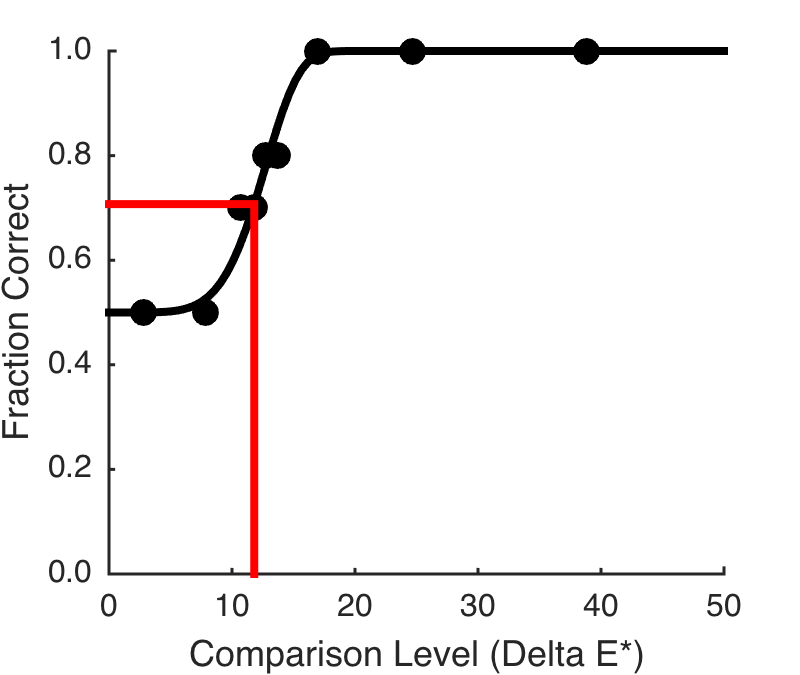

Contents
function varargout = PsychoFunPlot(varargin) % % Plot psychometric functions from illumination discrim data. % % This pulled out from Ana's code so I can muck with form of plot. % % 6/2/15 ar, dhb Created. varargout = UnitTest.runValidationRun(@ValidationFunction, nargout, varargin); end function ValidationFunction(runTimeParams)
Hello
UnitTest.validationRecord('SIMPLE_MESSAGE', sprintf('%s',mfilename));
Figure parameters
curDir = pwd; masterFigParamsDir = getpref('bfScripts','masterFigParamsDir'); cd(masterFigParamsDir); figParams = MasterFigParams; cd(curDir); if (exist('../SecondaryFigParams','file')) cd .. figParams = SecondaryFigParams(figParams); cd(curDir); end figParams.figType = {'pdf'};
Set session and grab data
This s subject 5 from the IllumDiscrimPlots script, and for the blue illumination direction
session = 1; if session == 1 meanValues = [ 2.8088 7.8171 10.7040 11.8667 12.6900 13.7016 16.9310 24.6809 38.8448]; nTrialsStair = [ 10 10 10 10 10 10 10 10 2]; nCorrectStair = [ 5 5 7 7 8 8 10 10 2]; threshPalStair = 11.8050; paramsValuesStair = [13.1892 5.6451 0.5000 0.0000]; elseif session == 2 meanValues = [ 3.7155 8.0301 9.3462 10.0463 12.3302 20.2939 33.3131]; nTrialsStair = [ 10 10 10 10 10 10 3]; nCorrectStair = [ 3 6 8 9 8 10 3]; threshPalStair = 8.8080; paramsValuesStair = [ 10.8955 2.9429 0.5000 0.0000]; end
Fit
PF = @PAL_Weibull; nIlluminants = 50; criterionCorr = 0.7071; probCorrFitStair = PF(paramsValuesStair,linspace(0,nIlluminants,100)); figParams.figName = 'PsychometricFunctionExample'; figParams.xLimLow = 0; figParams.xLimHigh = 50; figParams.xTicks = [0 10 20 30 40 50]; figParams.xTickLabels = {'^{ }0_{ }', '^{ }10_{ }', '^{ }20_{ }', '^{ }30_{ }', '^{ }40_{ }' '^{ }50_{ }'}; figParams.yLimLow = 0; figParams.yLimHigh = 1; figParams.yTicks = [0 0.2 0.4 0.6 0.8 1.0]; figParams.yTickLabels = {' 0.0 ' ' 0.2 ' ' 0.4 ' ' 0.6 ' ' 0.8 ' ' 1.0 '}; theFig = figure; clf; hold on set(gcf,'Position',[100 100 figParams.size figParams.sqSize]); set(gca,'FontName',figParams.fontName,'FontSize',figParams.axisFontSize,'LineWidth',figParams.axisLineWidth); plot(meanValues,nCorrectStair./nTrialsStair,'ko','MarkerFaceColor','k', 'MarkerSize', figParams.markerSize); plot(linspace(0,nIlluminants,100),probCorrFitStair,'k','LineWidth',figParams.lineWidth); xlim([figParams.xLimLow figParams.xLimHigh]); set(gca,'XTick',figParams.xTicks); set(gca,'XTickLabel',figParams.xTickLabels); xlabel('Comparison Level (Delta E*)','FontName',figParams.fontName,'FontSize',figParams.labelFontSize); ylim([figParams.yLimLow figParams.yLimHigh]); ylabel('Fraction Correct','FontName',figParams.fontName,'FontSize',figParams.labelFontSize); set(gca,'YTick',figParams.yTicks); set(gca,'YTickLabel',figParams.yTickLabels); %title('Single Subject Data','FontName',figParams.fontName,'FontSize',figParams.titleFontSize); %legend({' L cones ' ' M cones ' ' S cones '},'Location','NorthEast','FontSize',figParams.legendFontSize); %axis('square'); %set(gca,'XMinorTick','on'); FigureSave(fullfile(figParams.figName),theFig,figParams.figType); figParams.figName = 'PsychometricFunctionExampleWithThresh'; plot([0 threshPalStair],[criterionCorr criterionCorr],'r','LineWidth',figParams.lineWidth); plot([threshPalStair threshPalStair],[0 criterionCorr],'r','LineWidth',figParams.lineWidth); FigureSave(fullfile(figParams.figName),theFig,figParams.figType);
end